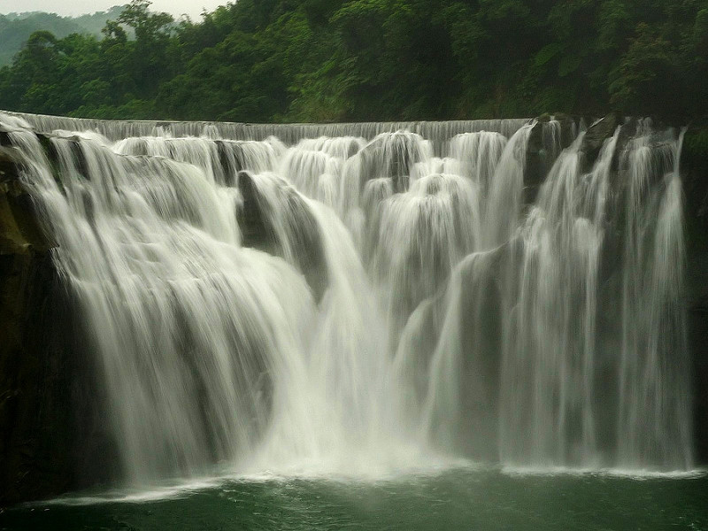
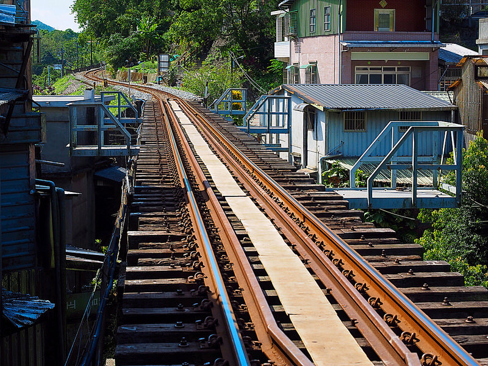
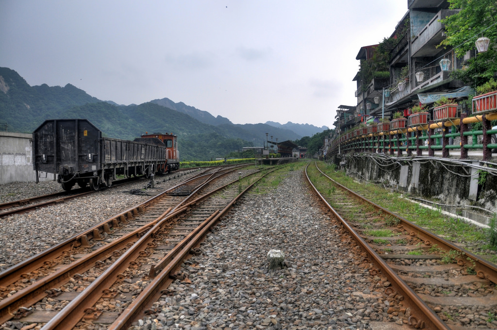

平溪是離臺北市區不遠的世外桃源，能實踐「慢活、慢慢走」的生活情調。平溪老街有著古樸的風味，山坡以及鐵道兩旁古厝房舍林立，大都多是傳統柑仔店、五金行、小吃店等。自採礦業逐漸沒落後，老街也漸漸沉寂下來。鐵道、山林花鳥與昔日採礦遺跡，都是遊賞的好景點；還有日治時期所遺留下來的防空洞與觀音巖的八仙洞，都是值得參觀、探險的好地方。平溪鐵路也是知名的廣告「張君雅小妹妹」拍攝的地點，每當平溪火車通過老街上方的鐵路就會傳來轟隆轟隆的聲響，每條巷道都可看見行經的火車，形成平溪老街的重要特色。
  